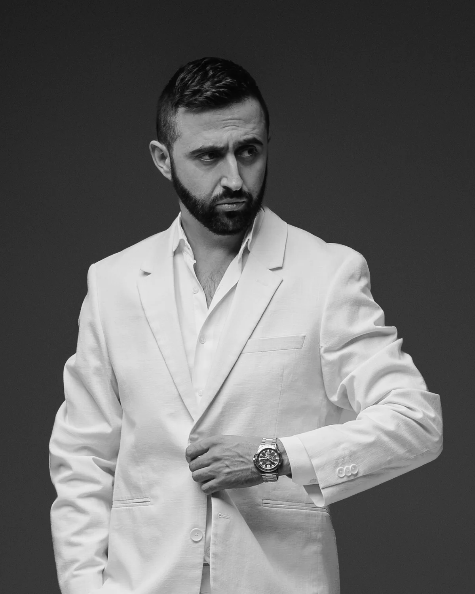

About
Fifteen years behind the camera.
I first picked up a camera in 2011. The craft came later — years of studying light and learning what separates a good photograph from an image a brand can build on.
Today, my work spans commercial, portrait, fashion, product and sports photography. My clients include companies, banks, athletes, actors and musicians.
I’m interested in images that feel considered rather than simply beautiful — photographs with a clear sense of light, character and purpose.
How I work
Within 24 hours of the shoot, you receive a pre-edited selection — my picks, not the full card. You choose the frames you want, and those are the images I retouch and deliver.
Unselected images never leave my archive. Not to the client, not to anyone. It’s the one rule I don’t bend.
